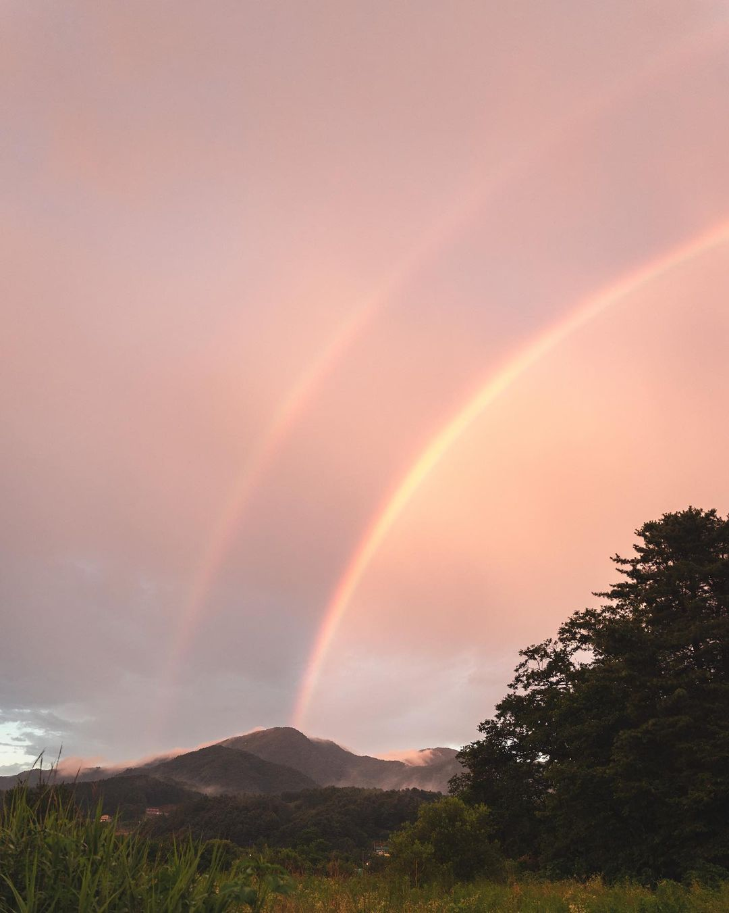
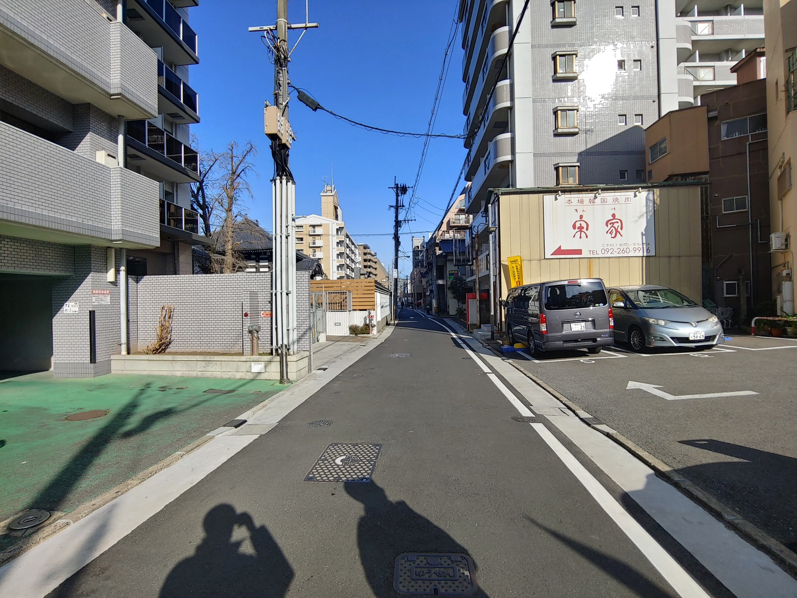
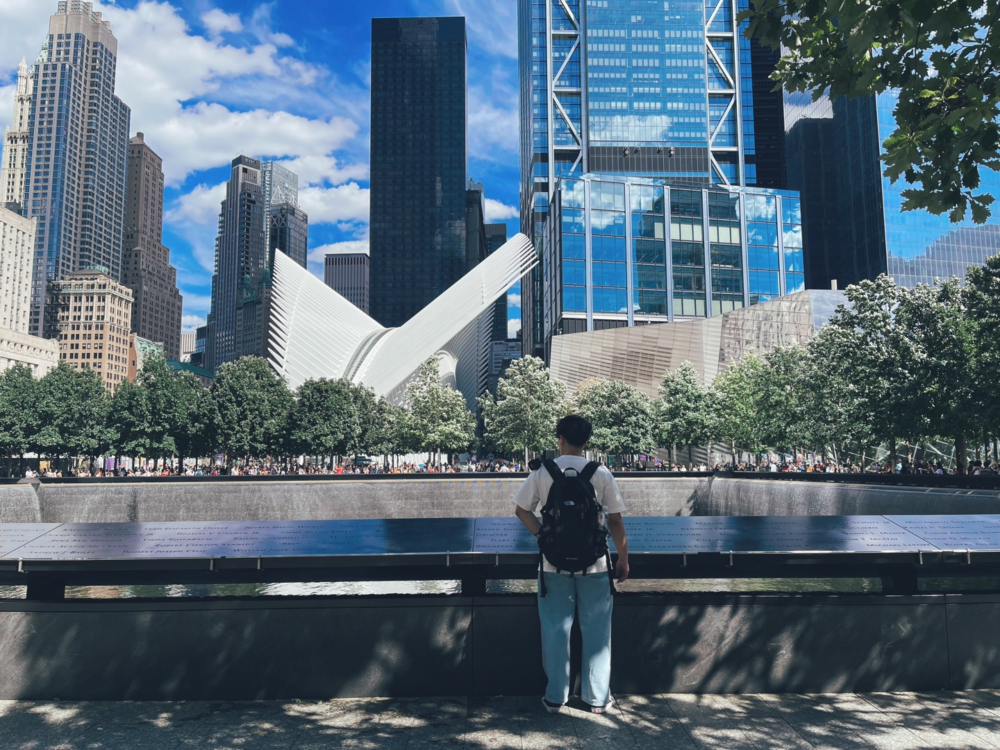

하이라인, 뉴욕 여행에서 가장 즐거웠던 코스이다. 하이라인에서 버스킹하는 여러 사람들, 예쁜 풍경들 다 멋있었다.

남양주에서 본 무지개, 실제로 무지개를 저렇게 크고 선명하게 본게 처음이라 멍하니 보게되었다. 개인적으로 내가 찍었지만 마음에 드는 사진.

후쿠오카에 여행갔을때 찍은사진, 뭔가 한국 스러우면서도, 일본스러운 한적한 거리였다. 일본은 몇번 갔지만, 이 여행이 가장 기억에 남는다.

미국 최대 참사중 하나인 911테러를 기리기 위해 만들어진 911메모리얼 파크. 난간에 희생자들의 이름이 하나하나 적혀있는 것과, 그 어지러운 뉴욕시내에 그 공원만의 분위기가 달랐다.